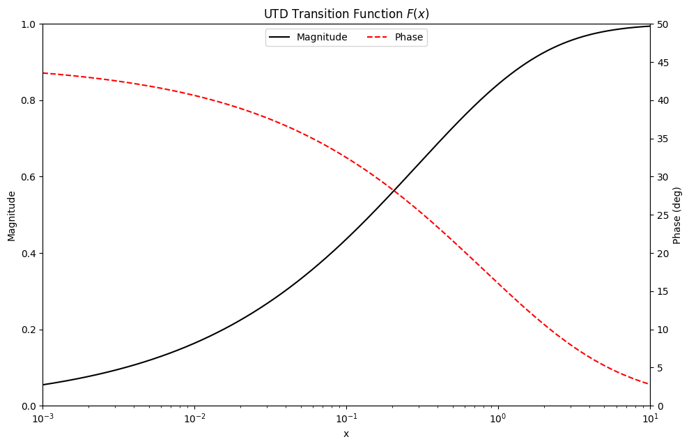

Utility Functions#
Complex-valued tensors#
- sionna.rt.utils.cpx_abs(x: Tuple[drjit.cuda.ad.TensorXf, drjit.cuda.ad.TensorXf]) drjit.cuda.ad.TensorXf[source]#
Element-wise absolute value of a complex-valued tensor
The tensor is represented as a tuple of two real-valued tensors, corresponding to the real and imaginary part, respectively.
- Parameters:
x (Tuple[drjit.cuda.ad.TensorXf, drjit.cuda.ad.TensorXf]) – A tensor
- sionna.rt.utils.cpx_abs_square(x: Tuple[drjit.cuda.ad.TensorXf, drjit.cuda.ad.TensorXf]) drjit.cuda.ad.TensorXf[source]#
Element-wise absolute squared value of a complex-valued tensor
The tensor is represented as a tuple of two real-valued tensors, corresponding to the real and imaginary part, respectively.
- Parameters:
x (Tuple[drjit.cuda.ad.TensorXf, drjit.cuda.ad.TensorXf]) – A tensor
- sionna.rt.utils.cpx_add(a: Tuple[drjit.cuda.ad.TensorXf, drjit.cuda.ad.TensorXf], b: Tuple[drjit.cuda.ad.TensorXf, drjit.cuda.ad.TensorXf]) Tuple[drjit.cuda.ad.TensorXf, drjit.cuda.ad.TensorXf][source]#
Element-wise addition of two complex-valued tensors
Each tensor is represented as a tuple of two real-valued tensors, corresponding to the real and imaginary part, respectively.
- Parameters:
a (Tuple[drjit.cuda.ad.TensorXf, drjit.cuda.ad.TensorXf]) – First tensor
b (Tuple[drjit.cuda.ad.TensorXf, drjit.cuda.ad.TensorXf]) – Second tensor
- sionna.rt.utils.cpx_convert(x: Tuple[drjit.cuda.ad.TensorXf, drjit.cuda.ad.TensorXf], out_type: Literal['numpy', 'jax', 'tf', 'torch'])[source]#
Converts a complex-valued tensor to any of the supported frameworks
The tensor is represented as a tuple of two real-valued tensors, corresponding to the real and imaginary part, respectively.
Note that the chosen framework must be installed for this function to work.
- Parameters:
x (Tuple[drjit.cuda.ad.TensorXf, drjit.cuda.ad.TensorXf]) – A tensor
out_type (Literal['numpy', 'jax', 'tf', 'torch']) – Name of the target framework. Currently supported are Numpy (“numpy”), Jax (“jax”), TensorFlow (“tf”), and PyTorch (“torch”).
- sionna.rt.utils.cpx_div(a: Tuple[drjit.cuda.ad.TensorXf, drjit.cuda.ad.TensorXf], b: Tuple[drjit.cuda.ad.TensorXf, drjit.cuda.ad.TensorXf]) Tuple[drjit.cuda.ad.TensorXf, drjit.cuda.ad.TensorXf][source]#
Element-wise division of a complex-valued tensor by another
Each tensor is represented as a tuple of two real-valued tensors, corresponding to the real and imaginary part, respectively.
- Parameters:
a (Tuple[drjit.cuda.ad.TensorXf, drjit.cuda.ad.TensorXf]) – First tensor
b (Tuple[drjit.cuda.ad.TensorXf, drjit.cuda.ad.TensorXf]) – Second tensor by which the first is divided
- sionna.rt.utils.cpx_exp(x: Tuple[drjit.cuda.ad.TensorXf, drjit.cuda.ad.TensorXf]) Tuple[drjit.cuda.ad.TensorXf, drjit.cuda.ad.TensorXf][source]#
Element-wise exponential of a complex-valued tensor
The tensor is represented as a tuple of two real-valued tensors, corresponding to the real and imaginary part, respectively.
- Parameters:
x (Tuple[drjit.cuda.ad.TensorXf, drjit.cuda.ad.TensorXf]) – A tensor
- sionna.rt.utils.cpx_mul(a: Tuple[drjit.cuda.ad.TensorXf, drjit.cuda.ad.TensorXf], b: Tuple[drjit.cuda.ad.TensorXf, drjit.cuda.ad.TensorXf]) Tuple[drjit.cuda.ad.TensorXf, drjit.cuda.ad.TensorXf][source]#
Element-wise multiplication of two complex-valued tensors
Each tensor is represented as a tuple of two real-valued tensors, corresponding to the real and imaginary part, respectively.
- Parameters:
a (Tuple[drjit.cuda.ad.TensorXf, drjit.cuda.ad.TensorXf]) – First tensor
b (Tuple[drjit.cuda.ad.TensorXf, drjit.cuda.ad.TensorXf]) – Second tensor
- sionna.rt.utils.cpx_sqrt(x: Tuple[drjit.cuda.ad.TensorXf, drjit.cuda.ad.TensorXf]) drjit.cuda.ad.TensorXf[source]#
Element-wise square root of a complex-valued tensor
The tensor is represented as a tuple of two real-valued tensors, corresponding to the real and imaginary part, respectively.
The following formula is implemented to compute the square roots of complex numbers: https://en.wikipedia.org/wiki/Square_root#Algebraic_formula
- Parameters:
x (Tuple[drjit.cuda.ad.TensorXf, drjit.cuda.ad.TensorXf]) – A tensor
- sionna.rt.utils.cpx_sub(a: Tuple[drjit.cuda.ad.TensorXf, drjit.cuda.ad.TensorXf], b: Tuple[drjit.cuda.ad.TensorXf, drjit.cuda.ad.TensorXf]) Tuple[drjit.cuda.ad.TensorXf, drjit.cuda.ad.TensorXf][source]#
Element-wise substraction of a complex-valued tensor from another
Each tensor is represented as a tuple of two real-valued tensors, corresponding to the real and imaginary part, respectively.
- Parameters:
a (Tuple[drjit.cuda.ad.TensorXf, drjit.cuda.ad.TensorXf]) – First tensor
b (Tuple[drjit.cuda.ad.TensorXf, drjit.cuda.ad.TensorXf]) – Second tensor which is substracted from the first
Electromagnetics#
- sionna.rt.utils.complex_relative_permittivity(eta_r: drjit.cuda.ad.Float, sigma: drjit.cuda.ad.Float, omega: drjit.cuda.ad.Float) drjit.cuda.ad.Complex2f[source]#
Computes the complex relative permittivity of a material as defined in (9)
- Parameters:
eta_r (drjit.cuda.ad.Float) – Real component of the relative permittivity
sigma (drjit.cuda.ad.Float) – Conductivity [S/m]
omega (drjit.cuda.ad.Float) – Angular frequency [rad/s]
- sionna.rt.utils.fresnel(x: drjit.cuda.ad.Float) drjit.cuda.ad.Complex2f[source]#
Computes the complex-valued Fresnel integral
The complex-valued Fresnel integral is defined as:
(55)#\[F_c(x) = \int_0^{\sqrt{\frac{2x}{\pi}}} \exp\left(j\frac{\pi s^2}{2}\right)ds = C(x) + jS(x)\]This function computes an approximation of this integral as described in Section 2.7 of [ITURP52615]. It has sufficient accuracy for most purposes. Note that we let the upper limit of the integral be \(\sqrt{2x/\pi}\) instead of \(x\), which is different from the definition in [ITURP52615]. Thus, evaluating \(F_c(x)\) corresponds to \(F_c(\sqrt{2x/\pi})\) in the classical definition.
- Parameters:
x (drjit.cuda.ad.Float) – Argument of the Fresnel integral
- Returns:
Complex-valued Fresnel integral
- sionna.rt.utils.f_utd(x: drjit.cuda.ad.Float) drjit.cuda.ad.Complex2f[source]#
Computes the UTD transition function
The UTD transition function is defined as:
\[F(x) = \sqrt{\frac{\pi x}{2}} e^{jx}\left(1+j-2jF_c^*(x) \right)\]where \(F_c^*(x)\) is the complex conjugate of the Fresnel integral (55).
- Parameters:
x (drjit.cuda.ad.Float) – Argument of the UTD transition function
- Returns:
Real and imaginary parts of the UTD transition function
Example#
The following code snippet produces a visualization of the magnitude and phase of the UTD transition function which matches that of Fig. 6 in [Kouyoumjian74].
import numpy as np import matplotlib.pyplot as plt import drjit as dr import mitsuba as mi mi.set_variant("cuda_ad_mono_polarized", "llvm_ad_mono_polarized") from sionna.rt.utils import f_utd, cpx_convert x = np.logspace(-3, 1, 1000) y = cpx_convert(f_utd(mi.Float(x)), "numpy") fig, ax1 = plt.subplots(figsize=(10, 6.5)) # Plot magnitude with label mag_line, = ax1.semilogx(x, np.abs(y), "k-", label="Magnitude") ax1.set_ylabel("Magnitude") # Create second y-axis ax2 = plt.twinx() # Plot phase with label phase_line, = ax2.semilogx(x, np.angle(y, deg=True), "r--", label="Phase") ax2.set_ylabel("Phase (deg)") # Combine lines from both axes for the legend lines = [mag_line, phase_line] labels = [line.get_label() for line in lines] # Add legend with both lines ax1.legend(lines, labels, loc='upper center', frameon=True, ncol=2) # Set title and x label plt.title(r"UTD Transition Function $F(x)$") ax1.set_xlabel("x") # Adjust limits and ticks ax1.set_xlim(x.min(), x.max()) ax1.set_ylim(np.abs(y).min(), np.abs(y).max()) ax2.set_ylim(np.angle(y, deg=True).min(), np.angle(y, deg=True).max()) ax1.set_yticks(np.linspace(0, 1, 6)) ax2.set_yticks(np.linspace(0, 50, 11)) plt.show()

- sionna.rt.utils.fresnel_reflection_coefficients_simplified(cos_theta: drjit.cuda.ad.Float, eta: drjit.cuda.ad.Complex2f) Tuple[drjit.cuda.ad.Complex2f, drjit.cuda.ad.Complex2f][source]#
Computes the Fresnel transverse electric and magnetic reflection coefficients assuming an incident wave propagating in vacuum (34)
- Parameters:
cos_theta (drjit.cuda.ad.Float) – Cosine of the angle of incidence
eta (drjit.cuda.ad.Complex2f) – Complex-valued relative permittivity of the medium upon which the wave is incident
- Returns:
Transverse electric \(r_{\perp}\) and magnetic \(r_{\parallel}\) Fresnel reflection coefficients
- sionna.rt.utils.itu_coefficients_single_layer_slab(cos_theta: drjit.cuda.ad.Float, eta: drjit.cuda.ad.Complex2f, d: drjit.cuda.ad.Float, wavelength: drjit.cuda.ad.Float) Tuple[drjit.cuda.ad.Complex2f, drjit.cuda.ad.Complex2f, drjit.cuda.ad.Complex2f, drjit.cuda.ad.Complex2f][source]#
Computes the single-layer slab Fresnel transverse electric and magnetic reflection and refraction coefficients assuming the incident wave propagates in vacuum using recommendation ITU-R P.2040 [ITURP20403]
More precisely, this function implements equations (43) and (44) from [ITURP20403].
- Parameters:
cos_theta (drjit.cuda.ad.Float) – Cosine of the angle of incidence
eta (drjit.cuda.ad.Complex2f) – Complex-valued relative permittivity of the medium upon which the wave is incident
d (drjit.cuda.ad.Float) – Thickness of the slab [m]
wavelength (drjit.cuda.ad.Float) – Wavelength [m]
- Returns:
Transverse electric reflection coefficient \(R_{eTE}\), transverse magnetic reflection coefficient \(R_{eTM}\), transverse electric refraction coefficient \(T_{eTE}\), and transverse magnetic refraction coefficient \(T_{eTM}\)
Geometry#
- sionna.rt.utils.phi_hat(phi: drjit.cuda.ad.Float) mitsuba.Vector3f[source]#
Computes the spherical unit vector \(\hat{\boldsymbol{\varphi}}(\theta, \varphi)\) as defined in (1)
- Parameters:
phi (drjit.cuda.ad.Float) – Azimuth angle \(\varphi\) [rad]
- sionna.rt.utils.theta_hat(theta: drjit.cuda.ad.Float, phi: drjit.cuda.ad.Float) mitsuba.Vector3f[source]#
Computes the spherical unit vector \(\hat{\boldsymbol{\theta}}(\theta, \varphi)\) as defined in (1)
- Parameters:
theta (drjit.cuda.ad.Float) – Zenith angle \(\theta\) [rad]
phi (drjit.cuda.ad.Float) – Azimuth angle \(\varphi\) [rad]
- sionna.rt.utils.r_hat(theta: drjit.cuda.ad.Float, phi: drjit.cuda.ad.Float) mitsuba.Vector3f[source]#
Computes the spherical unit vetor \(\hat{\mathbf{r}}(\theta, \phi)\) as defined in (1)
- Parameters:
theta (drjit.cuda.ad.Float) – Zenith angle \(\theta\) [rad]
phi (drjit.cuda.ad.Float) – Azimuth angle \(\varphi\) [rad]
- sionna.rt.utils.theta_phi_from_unit_vec(v: mitsuba.Vector3f) Tuple[drjit.cuda.ad.Float, drjit.cuda.ad.Float][source]#
Computes zenith and azimuth angles (\(\theta,\varphi\)) from unit-norm vectors as described in (2)
- Parameters:
v (mitsuba.Vector3f) – Unit vector
- Returns:
Zenith angle \(\theta\) [rad] and azimuth angle \(\varphi\) [rad]
- sionna.rt.utils.rotation_matrix(angles: mitsuba.Point3f) drjit.cuda.ad.Matrix3f[source]#
Computes the rotation matrix as defined in (3)
The closed-form expression in (7.1-4) [TR38901_RT] is used.
- Parameters:
angles (mitsuba.Point3f) – Angles for the rotations \((\alpha,\beta,\gamma)\) [rad] that define rotations about the axes \((z, y, x)\), respectively
Jones calculus#
- sionna.rt.utils.implicit_basis_vector(k: mitsuba.Vector3f) mitsuba.Vector3f[source]#
Returns a reference frame basis vector for a Jones vector, representing a transverse wave propagating in direction
kThe spherical basis vector \(\hat{\boldsymbol{\theta}}(\theta, \varphi)\) (1) is used as basis vector, where the zenith and azimuth angles are obtained from the unit vector
k.- Parameters:
k (mitsuba.Vector3f) – A unit vector corresponding to the direction of propagation of a transverse wave
- Returns:
A basis vector orthogonal to
k
- sionna.rt.utils.jones_matrix_rotator(k: mitsuba.Vector3f, s_current: mitsuba.Vector3f, s_target: mitsuba.Vector3f) drjit.cuda.ad.Matrix2f[source]#
Constructs the 2D change-of-basis matrix to rotate the reference frame of a Jones vector representing a transverse wave propagating in direction
kfrom basis vectors_currentto basis vectors_target- Parameters:
k (mitsuba.Vector3f) – Direction of propagation as a unit vector
s_current (mitsuba.Vector3f) – Current basis vector as a unit vector
s_target (mitsuba.Vector3f) – Target basis vector as a unit vector
- sionna.rt.utils.jones_matrix_rotator_flip_forward(k: mitsuba.Vector3f) drjit.cuda.ad.Matrix2f[source]#
Constructs the 2D change-of-basis matrix that flips the direction of propagation of the reference frame of a Jones vector representing a transverse wave from the basis vector corresponding to
kto the one corresponding to-kThis is useful to evaluate the antenna pattern of a receiver, as the pattern needs to be rotated to match the frame in which the incident wave is represented.
Note that the rotation matrix returned by this function is a diagonal matrix:
\[\begin{split}\mathbf{R} = \begin{bmatrix} \begin{array}{c c} c & 0 \\ 0 & -c \end{array} \end{bmatrix}\end{split}\]where:
\[c = \mathbf{s_c}^\textsf{T} \mathbf{s_t}\]and \(\mathbf{s_c}\) and \(\mathbf{s_t}\) are the basis vectors corresponding to
kand-k, respectively, and computed usingimplicit_basis_vector().- Parameters:
k (mitsuba.Vector3f) – Current direction of propagation as a unit vector
- sionna.rt.utils.to_world_jones_rotator(to_world: drjit.cuda.ad.Matrix3f, k_local: mitsuba.Vector3f) drjit.cuda.ad.Matrix2f[source]#
Constructs the 2D change-of-basis matrix to rotate the reference frame of a Jones vector representing a transverse wave with
k_localas direction of propagation from the local implicit frame to the world implicit frame- Parameters:
to_world (drjit.cuda.ad.Matrix3f) – Change-of-basis matrix from the local to the world frame
k_local (mitsuba.Vector3f) – Direction of propagation in the local frame as a unit vector
- sionna.rt.utils.jones_matrix_to_world_implicit(c1: drjit.cuda.ad.Complex2f, c2: drjit.cuda.ad.Complex2f, to_world: drjit.cuda.ad.Matrix3f, k_in_local: mitsuba.Vector3f, k_out_local: mitsuba.Vector3f) drjit.cuda.ad.Matrix4f[source]#
Builds the Jones matrix that models a specular reflection or a refraction
c1andc2are Fresnel coefficients that depend on the composition of the scatterer.k_in_localandk_out_localare the direction of propagation of the incident and scattered wave, respectively, represented in the local frame of the interaction. Note that in the local frame of the interaction, the z-axis vector corresponds to the normal to the scatterer surface at the interaction point.The returned matrix operates on the incident wave represented in the implicit world frame. The resulting scattered wave is also represented in the implicit world frame. This is ensured by applying a left and right rotation matrix to the 2x2 diagonal matrix containing the Fresnel coefficients, which operates on the local frame having the transverse electric component as basis vector:
\[\mathbf{J} = \mathbf{R_O} \mathbf{D} \mathbf{R_I}^\textsf{T}\]where:
\[\begin{split}\mathbf{D} = \begin{bmatrix} \begin{array}{c c} \texttt{c1} & 0 \\ 0 & \texttt{c2} \end{array} \end{bmatrix}\end{split}\]and \(\mathbf{R_I}\) (\(\mathbf{R_O}\)) is the change-of-basis matrix from the local frame using the transverse electric direction as basis vector to the world implicit frame for the incident (scattered) wave.
This function returns the \(4 \times 4\) real-valued matrix equivalent to \(\mathbf{J}\):
\[\begin{split}\mathbf{M} = \begin{bmatrix} \begin{array}{c c} \Re\{\mathbf{J}\} & -\Im\{\mathbf{J}\} \\ \Im\{\mathbf{J}\} & \Re\{\mathbf{J}\} \end{array} \end{bmatrix}\end{split}\]where \(\mathbf{M}\) is the returned matrix and \(\Re\{\mathbf{J}\}\) and \(\Im\{\mathbf{J}\}\) the real and imaginary components of \(\mathbf{J}\), respectively.
- Parameters:
c1 (drjit.cuda.ad.Complex2f) – First complex-valued Fresnel coefficient
c2 (drjit.cuda.ad.Complex2f) – Second complex-valued Fresnel coefficient
to_world (drjit.cuda.ad.Matrix3f) – Change-of-basis matrix from the local to the world frame
k_in_local (mitsuba.Vector3f) – Direction of propagation of the incident wave in the local frame as a unit vector
k_out_local (mitsuba.Vector3f) – Direction of propagation of the scattered wave in the local frame as a unit vector
- sionna.rt.utils.jones_vec_dot(u: mitsuba.Vector4f, v: mitsuba.Vector4f) drjit.cuda.ad.Complex2f[source]#
Computes the dot product of two Jones vectors \(\mathbf{u}\) and \(\mathbf{v}\)
A Jones vector is assumed to be represented by a real-valued vector of four dimensions, obtained by concatenating its real and imaginary components. The returned array is complex-valued.
More precisely, the following formula is implemented:
\[\begin{split}\begin{multline} a = \mathbf{u}^\textsf{H} \mathbf{v}\\ = \left( \Re\{\mathbf{u}\}^\textsf{T} \Re\{\mathbf{v}\}\\ + \Im\{\mathbf{u}\}^\textsf{T} \Im\{\mathbf{v}\} \right)\\ + j\left( \Re\{\mathbf{u})^\textsf{T} \Im\{\mathbf{v}\}\\ - \Im\{\mathbf{u}\}^\textsf{T} \Re\{\mathbf{v}\} \right) \end{multline}\end{split}\]- Parameters:
u (mitsuba.Vector4f) – First input vector
v (mitsuba.Vector4f) – Second input vector
Meshes#
- sionna.rt.utils.load_mesh(fname: str, flip_normals: bool = True) mitsuba.Mesh[source]#
Load a mesh from a file
This function loads a mesh from a given file and returns it as a Mitsuba mesh. The file must be in either PLY or OBJ format.
- sionna.rt.utils.transform_mesh(mesh: mitsuba.Mesh, translation: mitsuba.Point3f | None = None, rotation: mitsuba.Point3f | None = None, scale: mitsuba.Point3f | None = None)[source]#
In-place transformation of a mesh by applying translation, rotation, and scaling
The order of the transformations is as follows:
Scaling
Rotation
Translation
Before applying the transformations, the mesh is centered.
- Parameters:
mesh (mitsuba.Mesh) – Mesh to be edited. The mesh is modified in-place.
translation (mitsuba.Point3f | None) – Translation vector to apply
rotation (mitsuba.Point3f | None) – Rotation angles [rad] specified through three angles \((\alpha, \beta, \gamma)\) corresponding to a 3D rotation as defined in (3)
scale (mitsuba.Point3f | None) – Scaling vector for scaling along the x, y, and z axes
Miscellaneous#
- sionna.rt.utils.complex_sqrt(x: drjit.cuda.ad.Complex2f) drjit.cuda.ad.Complex2f[source]#
Computes the square root of a complex number \(x\)
The following formula is implemented to compute the square roots of complex numbers: https://en.wikipedia.org/wiki/Square_root#Algebraic_formula
- Parameters:
x (drjit.cuda.ad.Complex2f) – Complex number
- sionna.rt.utils.dbm_to_watt(x: drjit.cuda.ad.Float) drjit.cuda.ad.Float[source]#
Converts dBm to Watt
Implements the following formula:
\[P_W = 10^{\frac{P_{dBm}-30}{10}}\]- Parameters:
x (drjit.cuda.ad.Float) – Power [dBm]
- sionna.rt.utils.isclose(a: drjit.cuda.ad.Float, b: drjit.cuda.ad.Float, rtol: drjit.cuda.ad.Float = 1e-05, atol: drjit.cuda.ad.Float = 1e-08) drjit.cuda.ad.Bool[source]#
Returns an array of boolean in which an element is set to True if the corresponding entries in
aandbare equal within a toleranceMore precisely, this function returns True for the \(i^{th}\) element if:
\[|\texttt{a}[i] - \texttt{b}[i]| < \texttt{atol} + \texttt{rtol} \cdot \texttt{b}[i]\]- Parameters:
a (drjit.cuda.ad.Float) – First input array to compare
b (drjit.cuda.ad.Float) – Second input array to compare
rtol (drjit.cuda.ad.Float) – Relative error threshold
atol (drjit.cuda.ad.Float) – Absolute error threshold
- sionna.rt.utils.log10(x: drjit.cuda.ad.Float) drjit.cuda.ad.Float[source]#
Evaluates the base-10 logarithm
- Parameters:
x (drjit.cuda.ad.Float) – Input value
- sionna.rt.utils.sigmoid(x: drjit.cuda.ad.Float) drjit.cuda.ad.Float[source]#
Evaluates the sigmoid of
x- Parameters:
x (drjit.cuda.ad.Float) – Input value
- sionna.rt.utils.sinc(x: drjit.cuda.ad.Float) drjit.cuda.ad.Float[source]#
Evaluates the normalized sinc function
The sinc function is defined as \(\sin(\pi x)/(\pi x)\) for any \(x \neq 0\) and equals \(0\) for \(x=0\).
- Parameters:
- sionna.rt.utils.subcarrier_frequencies(num_subcarriers: int, subcarrier_spacing: float) drjit.cuda.ad.Float[source]#
Compute the baseband frequencies of
num_subcarriersubcarriers spaced bysubcarrier_spacing, i.e.,>>> # If num_subcarrier is even: >>> frequencies = [-num_subcarrier/2, ..., 0, ..., num_subcarrier/2-1] * subcarrier_spacing >>> >>> # If num_subcarrier is odd: >>> frequencies = [-(num_subcarrier-1)/2, ..., 0, ..., (num_subcarrier-1)/2] * subcarrier_spacing
- sionna.rt.utils.watt_to_dbm(x: drjit.cuda.ad.Float) drjit.cuda.ad.Float[source]#
Converts Watt to dBm
Implements the following formula:
\[P_{dBm} = 30 + 10 \log_{10}(P_W)\]- Parameters:
x (drjit.cuda.ad.Float) – Power [W]
Ray tracing#
- sionna.rt.utils.fibonacci_lattice(num_points: int) mitsuba.Point2f[source]#
Generates a Fibonacci lattice of size
num_pointson the unit square \([0, 1] \times [0, 1]\)- Parameters:
num_points (int) – Size of the lattice
- sionna.rt.utils.spawn_ray_from_sources(lattice: Callable[[int], mitsuba.Point2f], samples_per_src: int, src_positions: mitsuba.Point3f) mitsuba.Ray3f[source]#
Spawns
samples_per_srcrays for each source at the positions specified bysrc_positions, oriented in the directions defined by thelatticeThe spawned rays are ordered samples-first.
- Parameters:
lattice (Callable[[int], mitsuba.Point2f]) – Callable that generates the lattice used as directions for the rays
samples_per_src (int) – Number of rays per source to spawn
src_positions (mitsuba.Point3f) – Positions of the sources
- sionna.rt.utils.offset_p(p: mitsuba.Point3f, d: mitsuba.Vector3f, n: mitsuba.Vector3f) mitsuba.Point3f[source]#
Adds a small offset to \(\mathbf{p}\) along \(\mathbf{n}\) such that \(\mathbf{n}^{\textsf{T}} \mathbf{d} \gt 0\)
More precisely, this function returns \(\mathbf{o}\) such that:
\[\mathbf{o} = \mathbf{p} + \epsilon\left(1 + \max{\left\{|p_x|,|p_y|,|p_z|\right\}}\right)\texttt{sign}(\mathbf{d} \cdot \mathbf{n})\mathbf{n}\]where \(\epsilon\) depends on the numerical precision and \(\mathbf{p} = (p_x,p_y,p_z)\).
- Parameters:
p (mitsuba.Point3f) – Point to offset
d (mitsuba.Vector3f) – Direction toward which to offset along
nn (mitsuba.Vector3f) – Direction along which to offset
- sionna.rt.utils.spawn_ray_towards(p: mitsuba.Point3f, t: mitsuba.Point3f, n: mitsuba.Vector3f | None = None) mitsuba.Ray3f[source]#
Spawns a ray with infinite length from \(\mathbf{p}\) toward \(\mathbf{t}\)
If \(\mathbf{n}\) is not
None, then a small offset is added to \(\mathbf{p}\) along \(\mathbf{n}\) in the direction of \(\mathbf{t}\).- Parameters:
p (mitsuba.Point3f) – Origin of the ray
t (mitsuba.Point3f) – Point towards which to spawn the ray
n (mitsuba.Vector3f | None) – (Optional) Direction along which to offset \(\mathbf{p}\)
- sionna.rt.utils.spawn_ray_to(p: mitsuba.Point3f, t: mitsuba.Point3f, n: mitsuba.Vector3f | None = None) mitsuba.Ray3f[source]#
Spawns a finite ray from \(\mathbf{p}\) to \(\mathbf{t}\)
The length of the ray is set to \(\|\mathbf{p} - \mathbf{t}\|\).
If \(\mathbf{n}\) is not
None, then a small offset is added to \(\mathbf{p}\) along \(\mathbf{n}\) in the direction of \(\mathbf{t}\).- Parameters:
p (mitsuba.Point3f) – Origin of the ray
t (mitsuba.Point3f) – Point towards which to spawn the ray
n (mitsuba.Vector3f | None) – (Optional) Direction along which to offset \(\mathbf{p}\)